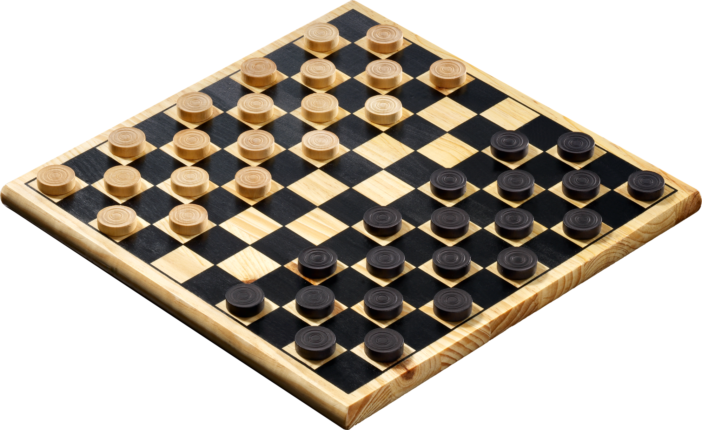

Accueil
Bienvenue à vous, jeune disciple. Ici commence votre quête de maitrise du l’art du sudoku. A la fin de ce périple, vous pourrez saurez tout sur ce mystérieux casse-tête et en vous exerçant un petit peu, vous serez capable de les résoudre avec la vitesse d’un ninja et la prestance d’un samouraï. IKUZO !!
Un petit peu d’histoire :
L'histoire du Sudoku remonte à un jeu de mathématicien suisse du XVIIIe siècle appelé "latin squares" (selon cet article de The Economist) et quelques-uns des premiers numéros de puzzles à apparaître dans les journaux ont été publiés en France en 1895. Mais le jeu moderne de Sudoku comme nous le reconnaissons aujourd'hui a été inventé par Howard Garns, un inventeur de puzzle freelancede Connersville, Indiana, USA en 1979 quand il a été publié dans les puzzles de crayon de Dell et le magazine de jeux de mot. Le puzzle était connu sous le nom de "Number place", car il impliquait de placer des numéros individuels dans des endroits vides sur une grille 9 x 9.
Le jeu est apparu pour la première fois au Japon en 1984 où il a été donné le nom de "Sudoku", qui est court pour une expression plus longue en japonais -"Sūji wa makushn ni kagiru"-ce qui signifie, "les chiffres sont limités à un événement." Sudoku continue d'être très populaire au Japon, où les gens achètent plus de 600 000 magazines de Sudoku par mois.
Règle du jeu
Grille à compléter
Aide Solution
0 0 0 6 1 4 0 0 0
9 0 8 0 0 0 0 0 0
0 1 0 8 0 0 7 3 0
2 0 0 9 6 0 0 0 0
0 7 0 3 0 0 9 0 5
0 6 0 0 0 0 0 1 2
0 0 3 0 0 0 8 2 0
4 0 0 0 9 2 0 0 0
0 0 5 7 0 8 6 0 9
Jouer en ligne
Exercez vous et maitriser l’art du sudoku à la perfection via les chemins ci-dessous :
Vous aimerez probablement :
Les Dames
Le jeu se joue à 2 et se pratique sur un damier de 10 cases sur 10, orienté avec une case foncée en bas à gauche chaque joueur possède 20 pions, placés sur les cases foncées des 4 premières rangées. Les joueurs jouent chacun à leur tour. Les blancs commencent toujours. Le but du jeu est de capturer tous les pions adverses. Si un joueur ne peut plus bouger, même s'il lui reste des pions, il perd la partie. Chaque pion peut se déplacer d'une case vers l'avant en diagonale. Un pion arrivant sur la dernière rangée et s'y arrêtant est promu en « dame ». Il est alors doublé (on pose dessus un deuxième pion de sa couleur).
Le domino
Pour jouer au domino il faut 28 domino et 2 à 4 joueurs. Chaque joueur reçoit 7 dominos ou 6 dominos suivant le nombre de participants. Le joueur ayant le double le plus élevé (le double 6 donc) commence la partie de domino. Si personne ne possède ce domino, ce sera le joueur ayant le double le plus fort. Le joueur suivant doit à son tour poser un domino ayant le même nombre de points sur au moins un côté du domino précédemment posé. Pour gagner au domino, il suffit d’être le premier joueur à avoir posé tous ses dominos. Il se peut que le jeu soit bloqué. Alors le joueur ayant le moins de points est déclaré vainqueur.